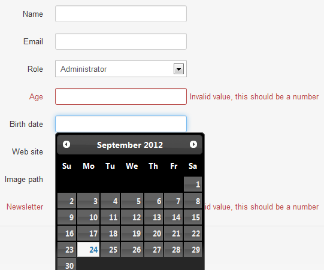

In this quick start guide, we will see how you can use BCE to build a user form
First thing you have to know, is that BCE directy relies your application's ORM system. For now, Mouf's ORM system is TDBM, but when others will be available, we will do our best to provide multi-ORM support. You will find a detailed description of BCE's architecture in the dedicated chapter
For this tutorial, let's assume a very classic database schema for handling users.
We have users. Users have some basic attributes as name, email, etc..., and they have a role defined by a foreign key named role_id. Finally, a user may have some Hobbies, which is represented by a many to many relationship table.

First thing you have to do is, obviously creating a BCE instance. This is done, as usual, by hiting the "create a new instance" link of the ribbon menu. For example, we create a userForm instance :

Once you've done this, you reach the dedicated configuration interface of BCE that embeds a lot of helpfull functionnalities. A "view properties" link in the left menu will get you back to the classic instance page).

The first thing to do is to select a DAO. As soon as you have chosen your DAO, the interface will suggest the detected field descriptors.
Notes:
For this quickstart, we will not go further, just so you know how quick it is to get a basic user form. So, in fact, you just created a BCEform instance, selected the DAO that handles your main object, and have written about 0 lines of code... Now please click the save button.
We will assume, you already now about splash and its MVC implementation. I not, please refer to it's documentation to understand what comes next.
Create a controller (let's say UserController), that has 2 actions: edit and save, and also is bound to a userForm property of type BCEForm:
/**
* The template used by the main page.
*
* @Property
* @var BCEForm
*/
public $userForm;
/**
* Page displayed when a user arrives on your web application.
*
* @URL /editUser
*/
public function edit($id = null) {
//initialize the Form
$this->userForm->load($id);
//Load the form's JS into the head of the DOM
$this->template->addHeadText('
<script type="text/javascript">
<!--
'. $this->userForm->getValidationJS() .'
//-->
</script>
');
$this->template->addContentFile(ROOT_PATH."views/user/edit.php", $this);
$this->template->draw();
}
/**
* @URL /saveUser
*/
public function save(){
$this->userForm->save($_POST);
}
The view linked to the controller only contains one single line of code:
$this->userForm->toHtml();
Last thing to do is binding your userController to the userForm instance, and you're done! Visit the /editUser URL, and you get... beautifull form!
There is a second tab called "configuration", that allows you to define the specific Id FieldDescriptor, and some other form related attributes (renderer to be used, id, name, action, etc...)

The widget is composed of a title bar that allows to sort, and expand/collapse the detailed view of the descriptor.